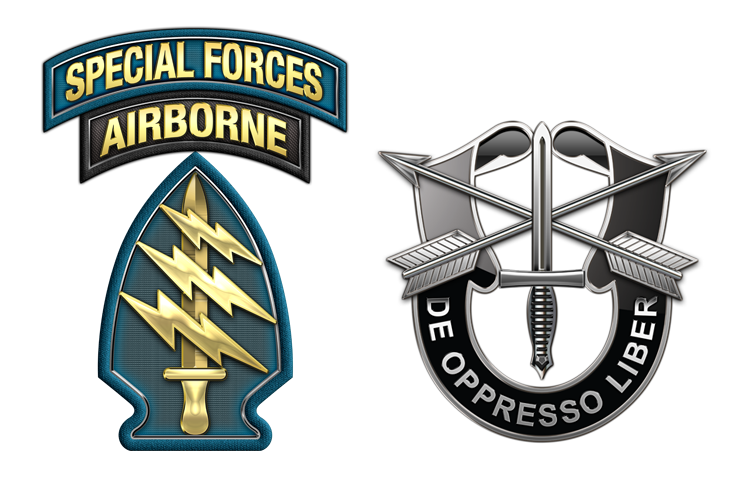

The Colonel
Walter E. Kurtz
Walter Kurtz was a career officer in the United States Army; he was a third-generation West Point graduate who had risen through the ranks and was seen to be destined for a top post within the Pentagon. A dossier read by the narrator, Captain Willard, implies that Kurtz saw action in the Korean War after receiving a master's degree in history from Harvard University. He later graduated from the US Army Airborne School.

In 1964, the Joint Chiefs of Staff sent Kurtz to Vietnam to compile a report on the failings of the current military policies. His overtly critical report was not what was expected and was immediately restricted for the Joint Chiefs and President Lyndon B. Johnson only.
Not long afterward, 38-year-old Kurtz applied for the 5th Special Forces Group, which was denied out of hand because his age was too advanced for basic training. Kurtz continued with his ambition and even threatened to quit the armed forces, when finally his wish was granted and he was allowed to take the airborne course. Kurtz graduated in a class where he was nearly twice the age of the other trainees and was accepted into the 5th Special Forces Group.